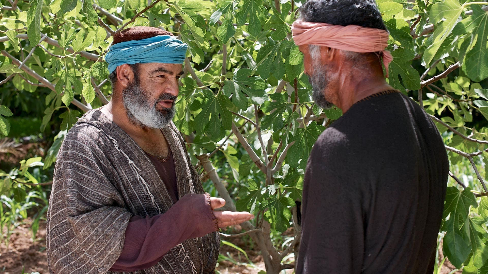

Leitura Orante
Leituras do Dia
Sábado 29ª do Tempo Comum Santo Antônio Maria Claret
(Branco - Ofício da memória)
24 de outubro de 2020
Leitura Orante do Evangelho
Ouça o áudio da oração e reflexão do padre Francisco das Chagas


Oração do dia
Ó Deus, que fortalecestes o bispo Santo Antônio Maria Claret com caridade e paciência admirável para propagar o Evangelho entre os povos, dai que, por sua intercessão, busquemos o que é vosso, e nos apliquemos com todo empenho em conquistar nossos irmãos para o Cristo. Que convosco vive e reina, na unidade do Espírito Santo.
Leitura: Jó 19,21-27
Irmãos, 7cada um de nós recebeu a graça na medida em que Cristo lha deu. 8Daí esta palavra: “Tendo subido às alturas, ele capturou prisioneiros e distribuiu dons aos homens”. 9“Ele subiu”! Que significa isso, senão que ele desceu também às profundezas da terra? 10Aquele que desceu é o mesmo que subiu mais alto do que todos os céus, a fim de encher o universo. 11E foi ele quem instituiu alguns como apóstolos, outros como profetas, outros ainda como evangelistas, outros, enfim, como pastores e mestres. 12Assim, ele capacitou os santos para o ministério, para edificar o corpo de Cristo, 13até que cheguemos todos juntos à unidade da fé e do conhecimento do Filho de Deus, ao estado do homem perfeito e à estatura de Cristo em sua plenitude. 14Assim, não seremos mais crianças ao sabor das ondas, arrastados por todo vento de doutrina, ludibriados pelos homens e induzidos por sua astúcia ao erro. 15Motivados pelo amor, queremos ater-nos à verdade e crescer em tudo até atingirmos aquele que é a cabeça, Cristo. 16Graças a ele, o corpo, coordenado e bem unido, por meio de todas as articulações que o servem, realiza o seu crescimento, segundo uma atividade à medida de cada membro, para a sua edificação no amor. – Palavra do Senhor.
Salmo Responsorial: 26(27)
Que alegria quando ouvi que me disseram: “Vamos à casa do Senhor!”
Que alegria quando ouvi que me disseram: “Vamos à casa do Senhor!” E agora nossos pés já se detêm, Jerusalém, em tuas portas.
Que alegria quando ouvi que me disseram: “Vamos à casa do Senhor!”
Jerusalém, cidade bem edificada num conjunto harmonioso; para lá sobem as tribos de Israel, as tribos do Senhor.
Que alegria quando ouvi que me disseram: “Vamos à casa do Senhor!”
Para louvar, segundo a lei de Israel, o nome do Senhor. A sede da justiça lá está e o trono de Davi.
Que alegria quando ouvi que me disseram: “Vamos à casa do Senhor!”Evangelho: Lucas 13,1-9
1Naquele tempo, vieram algumas pessoas trazendo notícias a Jesus a respeito dos galileus que Pilatos tinha matado, misturando seu sangue com o dos sacrifícios que ofereciam. 2Jesus lhes respondeu: “Vós pensais que esses galileus eram mais pecadores do que todos os outros galileus por terem sofrido tal coisa? 3Eu vos digo que não. Mas, se vós não vos converterdes, ireis morrer todos do mesmo modo. 4E aqueles dezoito que morreram quando a torre de Siloé caiu sobre eles? Pensais que eram mais culpados do que todos os outros moradores de Jerusalém? 5Eu vos digo que não. Mas, se não vos converterdes, ireis morrer todos do mesmo modo”. 6E Jesus contou esta parábola: “Certo homem tinha uma figueira plantada na sua vinha. Foi até ela procurar figos e não encontrou. 7Então disse ao vinhateiro: ‘Já faz três anos que venho procurando figos nesta figueira e nada encontro. Corta-a! Por que está ela inutilizando a terra?’ 8Ele, porém, respondeu: ‘Senhor, deixa a figueira ainda este ano. Vou cavar em volta dela e colocar adubo. 9Pode ser que venha a dar fruto. Se não der, então tu a cortarás!'” – Palavra da Salvação.
Leituras do mês
TAGS
missao Amazonia evengel covid-19 indigenas novica papa francisco
Destaques
Província Stella Matutina
Rua São Benedito, 2146 - Santo Amaro - São Paulo - SP |
Tel. (11)
5547-7222


Província Spiritus Divinae Sapientiae
Rua Arnaldo Janssen, 320 - Cara-Cara - Ponta Grossa - PR |
Tel. (42) 3326 4091